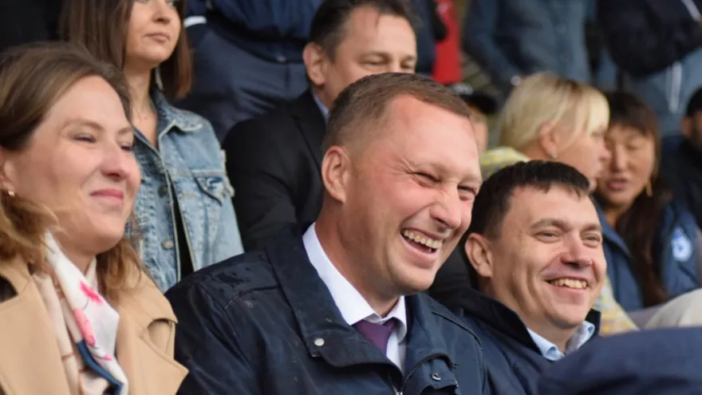

Губернатор Романа Бусаргина наконец-то отчитался перед депутатами областной думы о работе правительства за 2025 год. Опоздал, правда, знатно — уже апрель 2026-го, первый квартал позади. Но лучше поздно, чем... никогда?
Депутаты спросили про главную боль — нехватку врачей, учителей, инженеров. Бусаргин ответил бодро: разработаем программу по возвращению саратовцев, которые уехали учиться или работать.
Идея, конечно, прекрасная. Только вот молодёжь массово не видит себя в регионе, бизнес сворачивается из-за внеплановых проверок, а зарплаты остаются одними из самых низких в ПФО. Люди бегут отсюда, как с тонущего корабля, а губернатор им сказки рассказывает.
Главный анекдот отчёта — знаменитый долгострой. Оперный театр стоит в руинах уже несколько лет, реконструкция топчется на месте. Бусаргин гордо заявил, что в этом году удалось вернуть государству почти 1 миллиард рублей, уплаченных бывшему подрядчику.
Достижение, конечно. Только вот театр как не работал, так и не работает. А «сохранить» — это, видимо, чтобы окончательно не развалился.
Бусаргин заявил с трибуны: Саратовская область перестала фигурировать как столица бездорожья. В этом году планируется привести в порядок большую часть дорог.
Проблема только в том, что депутаты буквально на днях показывали на комитетах реальное состояние дорог — ямы, трещины, разбитые тротуары. Но на бумаге-то всё гладко. Видимо, «перестала фигурировать» означает «перестали писать в официальных отчётах».
Мэр Саратова Игорь Молчанов тепло отписался об отчёте губернатора в своём телеграм-канале. Саратовчане в комментариях спросили: «Почему в реакциях нет ржущего смайлика?». Вопрос риторический.
На бумаге у Бусаргина всё идеально: экономика растёт, безработица минимальная, долги снижаются. А в реальности — дефицит бюджета, текущие трубы, 450 аварий на теплосетях за сезон и 100-е место по строящемуся жилью на душу населения. И это при том, что правительство России недавно снова списало часть кредитов региона — без подачек Москвы отчёт выглядел бы ещё печальнее.
Бусаргин обещает «стратегическое планирование» и «широкий горизонт». Теперь особенно нелепо выглядит полученный неделей ранее орден Александра Невского. Как и сам отчёт. Как и сам губернатор.
Мы по-прежнему ждём, когда «бумажное развитие» превратится в нормальные дороги, отремонтированные трубы и рабочие места с достойной зарплатой. А пока — только «программы», «концепции» и «планы», которые в очередной раз разбиваются о реальность.